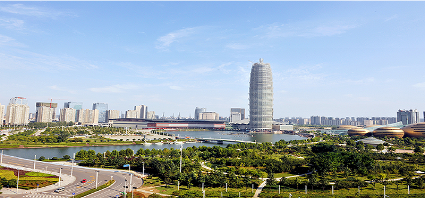

水域靓城的实现路径,郑州市水生态文明城市建设综述
郑州，中国中部地区重要的中心城市，国家重要的综合交通枢纽，中原经济区核心城市，位于河南省中部偏北，北临黄河，西依嵩山，东南为广阔的黄淮平原。下辖中原区、二七区、管城区、金水区、惠济区、高新开发区、经济开发区、郑东新区、航空港区10个市辖区，巩义市、新密市、新郑市、登封市、荥阳市5个县级市和中牟县1个县，总面积7446.2平方公里，总人口972.4万人，2016年完成生产总值7994.2亿元。 2016年10月，河南省省长陈润儿在调研时充分肯定了郑州的水生态文明建设。他特别强调，一座城市宜居才能乐业。城市有水才有灵气，有水才有活力。郑州不仅要成为经济增长的载体，还要成为人们宜居的乐园。 2017年1月16日，河南省委书记、省人大常委会主任谢伏瞻来到省十二届人大七次会议郑州代表团，与代表们共同审议政府工作报告，听取大家的意见建议。他强调，郑州要发挥优势、真抓实干、重点突破，努力建设国家中心城市，在全省发展大局中更好发挥龙头作用、引领作用、支撑作用。 2017年4月21日，河南省委常委、政法委书记许甘露在调研郑州水生态建设时指出，水生态建设是郑州建设国家中心城市的一个重要内容，也是今后郑州经济社会大发展的一个战略资源，更是郑州市民追求美好生活的重要指标，也是郑州市提升城市品位、提高城市声誉、使它更有魅力和吸引力的重要突破口。 “水生态文明建设赋予了水利工作新的内涵。随着试点方案的逐步实施，除原有的城市供水、防洪排涝、河道治理等工作职能外，河湖库渠的水网连通、水资源的保护与优化配置、水生态的修复、水环境的整治、水景观的打造等内容在城市水利工作中的地位和作用愈加显现，愈发重要。”郑州市水务局党组书记、局长张胜利说。

近年来，郑州先后迎来了河南自贸区、中原经济区、郑州航空港经济综合实验区、郑洛新国家自主创新试验区及建设国家中心城市等多重利好政策支持，但又面临着水资源、水环境、水生态等问题多重挑战。如何让整个城市的“身体”健康运转起来，为经济社会发展提供水资源基础支撑和保障，为百姓谋福祉，这是摆在郑州面前的难题。 南水北调中线一期工程的通水和获批全国水生态文明城市建设试点市，为郑州治水兴水带来了难得的历史机遇。郑州立足市情水情，从战略高度审视水问题，立足全局谋划推进水生态文明城市建设。 持之以恒，久久为功。郑州坚持“一张蓝图绘到底”的精神，狠抓落实，开创了治水兴水新局面，形成了总体效应，取得了总体效果。 一、规划引领，坚持一张蓝图绘到底 如果说郑东新区是展示郑州新形象的窗口，那么层次丰富、功能完善的生态水系则是点睛之笔。早在规划之初，郑东新区便考虑了城市缺水的特点，充分利用河道、湖泊、湿地的循环、调蓄和互补作用，开展集景观、调蓄、灌溉、气候调节等多种功能于一体的水域建设，如意湖与龙湖相连接，龙湖通过魏河连着龙子湖，汇入贾鲁河的魏河又与象湖相通，湖河相连，构成了郑东新区完整的水生态系统。 郑东新区生态水系建设的成功实践，为全市开展水生态文明建设提供了有益经验，形成了郑州市推动顶层设计和示范探索的良性互动。 郑东新区人工湿地，通过化学、物理、生物的综合协调作用，对人工湿地水体污染物进行高效分解净化，从技术上摒弃了传统过滤、撒药等污水处理方法，避免了药物对环境的危害，有效保护了水环境。此外，将如意湖水系内湖水输送到人工湿地，经水净化系统回流入如意湖水系，最大限度地实现了城市生态景观用水的循环利用，年节水300万立方米以上。 郑东新区水务局局长王晓沛介绍说：“在试点规划中，郑东新区被定为城市形象展示区。我们将龙湖、龙子湖、象湖、如意湖、昆丽河融会贯通，共同组合成生态意志凸显的组合式水系。人们都称新区为‘高富帅’、‘白富美’，连李克强总理都多次为我们点赞”。 当然，事物发展是一个螺旋上升的过程。 2006年11月，郑州启动生态水系规划和建设，完成了贾鲁河一期治理工程、须水河索须河河道一期治理工程、潮河河道治理工程、七里河治理工程、魏河治理工程、十七里河、十八里河治理工程、索须河二期治理工程。在进行河道治理的同时，为了给河道补充水源，实施了花园口引黄供水补源灌溉和生态水系输水两大水源工程，生态水系“水通、水清”的目标基本实现，取得了阶段性成果，形成了以花园口引黄供水补源灌溉工程、生态水系输水工程、邙山提灌站、杨桥灌区等共同组成的水源保障体系，水源补给方式由原来单一的水库、雨水和中水供水体系，转变为引黄、水库、雨水和中水的多元供水体系。郑州市生态水系建设改善了城市生态环境、补给了地下水资源，同时也为下游农业灌溉用水提供了水源保障，实现了“城市用水—生态用水—农业用水”的循序利用，形成了以城区及周边6纵6横12条河渠、3个湖泊、2个湿地为基本构架，以再生水和雨洪水为基础，以引黄水为补充，且在强化污水和雨水收集与处理回用的基础上，沟通规划区内河湖水系，打造融城市水系、绿化建设、灌区灌溉为一体的城乡循环型生态水系统，城市生态环境质量大幅提升，水资源综合效益显著提高。但是，受引黄工程能力的限制，河道生态用水尚未得到有效解决，加之郑州都市区建设的推进，郑州生态水系规划亟待提升。 2013年7月31日，水利部正式批准郑州为全国首批水生态文明城市建设试点。郑州以此为契机，紧密结合水生态系统特点和面临的问题，综合郑州市已有相关规划，全面、系统、科学、现实可行地制定了《郑州市水生态文明城市建设试点实施方案》，总体目标是最严格水资源管理制度有效落实，“三条红线”和“四项制度”全面建立；巩固节水型社会建设成果，用水总量得到有效控制，用水效率和效益显著提高；科学合理的水资源配置格局基本形成，防洪保安能力、供水保障能力、水资源承载能力显著增强；水资源保护与水系健康保障体系基本建成，水功能区水质明显改善，城镇供水水源地水质全面达标，生态水系在原有基础上进一步得到有效修复，构建起健康的水生态系统。 为了让各项举措在政策取向上相互配合、在实施过程中相互促进、在实施成效上相得益彰，郑州坚持统筹集成、整体推进，结合《郑州市水生态文明城市建设试点实施方案》，配套编制了《郑州都市区生态水系全面提升工程规划》，形成了具有科学性、前瞻性的规划方案，努力在水通、水清、水美、水循环和水生态建设上实现新提升，形成具有多水源保障和水动力特征的水系网络。为保障政策的持续性、稳定性，该规划于2014年6月27日经市十四届人大常委会第3次会议审议通过，以地方立法的形式实施。 郑州坚持“一张蓝图绘到底”，为建设水生态文明城市提供了坚强的制度保障。 二、创新理念，转变治水思路 郑州地处中原腹地，地跨黄河、淮河两大流域，黄河流域占全市总面积的27%，淮河流域占73%，郑州降水时空分布不均，多年平均降雨量仅有635.6毫米，人均水资源占有量178立方米，是全省人均水资源量的1/2，是全国人均水资源量的1/10，属于严重缺水地区。而且市区河流多为城市雨水、污水排泄河道，金水河、熊耳河、东风渠、七里河、魏河、潮河等缺乏天然水源，枯水季节断流，部分河段出现干涸现象。水资源紧缺、水污染严重、河网不完善、水系功能不健全、防洪标准偏低、水体生态功能退化等因素，严重制约着经济社会的发展。特别要强调的是，郑州地处淮河上游，市内大部分河流的水都经贾鲁河最终汇入淮河。因此，建设水生态文明城市，对于郑州构建健康水生态系统格局及淮河流域保护均具有十分重要的现实意义。 郑州立足水生态功能与特色，创新提出“全域水系、循环水系”治水理念，以郑州都市区规划建设范围为重点，优化水生态功能区布局，形成功能完善、协调统一、健康和谐的“一环、三源、六区、多点”的总体格局，重点实施10项示范工程，进一步提高水资源管理能力和水平，提升水资源承载能力，改善水生态环境，实现“四个转变”，形成“水源优、河湖通、清水流、沿岸美”的健康水生态系统。 一是水资源管理实现“体系完善、制度健全、落实有效”。建立最严格水资源管理制度考核体系，全行政区域内实现水资源管理目标政绩考核。积极理顺水务管理体制，供水、用水、管水形成一体化管理模式。建立“入河排污口设置同意制度”、“节水设施三同时制度”，从源头控制水源合理配置，有效治污截污。探索实践水市场经济调节机制，形成建设资金投入多元机制。 二是水资源配置实现“优水优用、联合调度、生态平衡”。按照生活、生产、生态用水顺序调度用水，普及农村集中供水，提高农民生活质量，城乡饮用水水质全面达标。保障河湖生态基流，不断改善河湖湿地生态系统健康水平，提高河道侧渗能力，回补地下水源。通过河湖连通，促进水体流动，改善生物多样性和栖息环境，降低城市热岛效应。 三是水资源利用实现“总量控制、定额管理、效率提高”。以社会经济可持续发展为目标，落实用水总量、用水效率控制目标，坚决压缩地下水开采量，提高计划用水管理率。推进非常规水资源开发利用，提高矿井水、中水、雨水利用量。全市万元工业增加值用水效率通过产业结构调整、节水技术改造、用水责任管理得到显著提高。 四是水文化建设实现“公众认知、全民参与、用水文明”。改善河流、湖泊、湿地、园林、水利风景区生态环境，提升城乡居民亲水指数，传承挖掘黄淮流域水文化，推进水情教育，宣传生态文明，提高公众参与认知程度，增强全社会水资源节约保护意识，树立水生态文明理念。 三、做优水文章，打造水域靓城 2013年7月31日，郑州市被水利部确定为第一批45个全国水生态文明城市建设试点。2014年1月7日，《郑州市水生态文明城市建设试点实施方案》通过了由水利部、黄河水利委员会和河南省水利厅共同组织的专家审查。2014年2月7日，郑州市召开水生态文明城市建设工作动员大会。2014年4月25日，河南省人民政府批复《郑州市水生态文明城市建设试点实施方案》。 郑州市委、市政府高度重视试点工作，以“用好丹江水、用活黄河水、留住天上水、多用再生水、保护地下水、治理洪涝水、科学配置水、倡导节约水”为基本思路，构建最严格的水资源管理制度、科学的水资源配置、河湖水库水系连通、高效的节约用水管理、安全的水资源保护、健康的水生态保护与修复、有力的保障支撑和特色的水文化等“八大体系”，将郑州打造成“水源优、河湖通、清水流、沿岸美”的全国水生态文明建设示范市。 （一）最严格水资源管理体系建设 1.用水总量控制 严格规划管理和水资源论证。试点期间，郑州市组织编制完成《郑州市水资源综合规划》、《郑州市节水型社会建设“十二五”规划》等规划，形成了比较完善的水资源规划体系。同时，进一步加强各县（市、区）水资源规划编制工作，在相关规划和项目建设布局中加强水资源论证工作，严格执行建设项目水资源论证制度。 严格控制区域用水总量。在对郑州市现状用水量、可供用水量进行分析的基础上，确定了郑州市各县（市、区）2015、2020和2030水平年用水总量控制目标。 严格实施取水许可。严格执行建设项目水资源论证审批制度，严格按照建设项目取水许可审批规定进行审批和后期监管，加强对全市重点灌区取水许可行政审批，完成了全市取水许可台账建设，2016年新发取水许可证92个，延续换发取水许可证84个。同时，组织对市内5区和4个开发区水资源管理专项检查，重点检查取用水户手续办理、计划用水管理、水资源费征收、地下水压采等工作，对检查发现的问题，及时反馈并要求有关单位认真整改。 严格水资源有偿使用。严格水资源费征收、使用和管理，征收水资源费主要用于水资源节约、保护和管理。 严格地下水管理和保护。确定全市地下水压采目标任务、压采范围和对象、压采计划、压采原则步骤及保障措施，完成了全市公共供水管网覆盖范围内自备井情况调查、封井工程统计、封井目标及计划。2016年度郑州市地下水压采任务1135.7487万立方米，实际完成4248.3404万立方米。 2.用水效率控制 全面加强节约用水管理。一是全市居民用水实施阶梯水价制度；二是持续开展节水型单位、企业、社区的创建工作，以龙头企业带动工业节水、以集雨节灌带动山区节水、以示范灌区带动农业节水、以中水回用和矿井排水再利用带动非常规水源开发利用，以典型示范工程带动全社会节水；三是积极组织全市计划用水单位开展水平衡测试，分析用水户水量平衡关系和用水程度，深挖节水潜力，提高合理用水水平。 强化用水定额管理。严格按照标准规范对取用水户下达年度用水计划，并按照《郑州市节约用水条例》对计划用水管理户用水实行超计划、超定额加价收取水费制度。同时，成立了计划用水管理专项工作小组，于2016年7月至8月对五县（市）和上街区计划用水管理工作进行了督导和辅导，通过组织开展计划用水户档案规范化管理“互评互学”检查，促进全市计划用水管理更加规范和精细。 加快推进节水技术改造。郑州市政府每年投入专项资金用于计划用水单位节水设施建设项目的资金补助，以点带面，推动全市节水设施建设。实施了高效园区中水处理回用工程和循环水利用项目、新密矿坑排水再利用项目、中牟等一大批农业节水示范和山区集雨节灌项目，建设了郑东新区人工湿地公园节水教育基地，建立了“郑州市用水节水产品检测站”，编制了《郑州市节水器具推荐产品名录》。加大城市公共供水管网改造力度，着力降低供水管网漏损率；积极开展以节水灌溉为目标的农田水利现代化示范乡镇项目建设，着力打造“智能、节水、规模、增效”的现代化农业示范区。 3.水功能区限制纳污控制 严格水功能区监督管理。一是完成水功能区划，核定水域纳污能力，强化各项保护措施、开展排污口集中整治。二是从2009年开始，对重点水功能区进行集中监测。三是加大污水处理厂建设力度，着力提高城市污水处理率，改善水环境质量。四是持续推进水污染防治。以贾鲁河、双洎河流域为整治重点，强化监管、监测和预警应急管理，贾鲁河、双洎河水环境质量得到持续改善。五是加快生态治理工程建设，确定了贾鲁河、双洎河流域28项治理工程，建立了周督查、月例会等制度，督促加快工程进度，加快推进工程建设。六是市控以上重点排水企业全部安装自动监控设施，24小时自动监控，对重点企业实施专人负责、驻厂监管，建立水质超标预警和紧急应对机制，发现水质超标立即启动响应程序，协调相关部门及时处置。 加强饮用水水源保护。组织开展全市县级和乡镇集中式饮用水水源保护区划定，积极推进饮用水水源地达标建设，加快实施农村饮水安全工程，制定了石佛、东周、柿园水厂饮用水源地突发事件应急预案，颁布了《郑州市城市饮用水源保护和污染防治条例》，组织编写《郑州市集中式饮用水水源环境状况评估报告》（2014—2016），完成了列入全国重要饮用水水源地名录的邙山提灌站饮用水水源地、花园口饮用水水源地、东周水厂饮用水水源地、石佛水厂饮用水水源地达标建设和年度评估工作，组织开展饮用水水源地专项整治工作“回头看”，严格排查整治违法建设项目。 推进水生态系统保护与修复。郑州市委、市政府把生态水系暨水生态文明建设作为全市5大重点工作之一，研究确立了全市水生态体系建设的总体思路、基本原则和工作重点，成立了郑州市生态水系暨水生态文明建设工作领导小组，并于2015年1月印发了《郑州城区生态水系“水清河美”行动方案》，出台了《郑州市城市河流清洁行动实施方案》。自2014年以来，每年春节后上班第一天，郑州市就组织召开全市生态建设大会，郑州市人民政府先后印发了2014年、2015年、2016年和2017年《水生态文明建设实施方案》，为全市水生态文明建设指明了方向。 4.健全水资源监控体系 郑州市自2005年开始建设全市水资源实时监控与管理系统，规模以上取用水户全部安装实时监控系统，通过该项目建设，建立了一套比较完整的水资源数据采集、存储、交换、分析系统，创建了水资源管理基础数据库，实现主要取水户水量、水位实时监测，地表水水源地水质实时监测，根据其变化信息适时实施动态决策与管理，实现水务管理的网格化和信息公开化，为强化水资源管理打下了坚实基础。 5.完善水资源管理体制 郑州市建立了覆盖市、县两级的实行最严格水资源管理制度框架体系。全市进一步理顺了管理体制，夯实了管理基础，进一步加大取水许可管理、计划用水指标核定、超计划用水累进加价等水资源管理制度落实力度。以“依法治水”、“依法行政”为导向，推动水政执法监察管理法制化，建立了行政执法责任制，制定了《郑州市水务局2016年度行政执法责任制实施方案》，将梳理确认的115项权责清单录入市执法系统，理清权责，同时加强服务型行政执法建设，推进行政指导方式应用。 6.建立水资源管理责任和考核制度 进行了市政府12个局委的重点工作责任分工，成立了由市水务、发改、环保等12个市政府部门参加的落实最严格水资源管理制度考核工作组，构建了实行最严格水资源管理制度考核框架体系，出台了考核工作方案，并按照方案开展对各县（市、区）的考核。每年年初，全市印发上一年度《郑州市实行最严格水资源管理制度考核工作方案》，确定了全市最严格水资源管理制度考核内容、考核步骤，并把考核结果报市人民政府，对考核结果进行通报，作为地方政府主要负责人和领导班子综合考核评价的重要依据。 （二）科学的水资源配置体系建设 2014年12月12日，南水北调中线一期工程正式通水，这给郑州带来了5.4亿立方米/年的水资源增量，优质的丹江水不但提高了生活水质，而且置换出引黄水量3亿立方米，丹江、黄河与淮河水汇聚郑州，为郑州优化水资源配置、加快河湖水系连通、加强水生态综合治理提供了巨大的腾挪空间。 1.多水源配置网络建设 南水北调中线配套工程建设。郑州市南水北调配套工程2012年底开工建设，2014年底部分线路通水。郑州市南水北调配套工程是从境内总干渠7座分水口门引水，分别向新郑市、航空港区、中牟县、郑州市区、荥阳市和上街区供水的输水工程。共设置7座提水泵站，布置输水线路18条，总长93.51公里，受水水厂10座。截至目前，10个配套水厂输水线路已全部贯通，均已正常运行，累计向水厂供水近8亿吨。 邙山干渠复线工程。郑州邙山输水干渠复线工程从邙山二级提灌站出口至枯河分水井，全长5.73公里，工程项目包括一级泵站重建工程、明渠工程、输水隧洞工程、涵管工程、大刘沟沉沙池加固工程、水闸工程、人字门闸工程及水源保护工程等，工作内容有土方挖填、土方洞挖、沉沙池清淤、顶管、钢筋砼浇筑、隧洞喷砼支护、进出口节制闸等。该项目的建设不仅提高了水厂用水保证率，同时有效解决了郑州市生态水系用水需求。 引黄水源工程调度与管理。建成花园口引黄供水补源灌溉工程，实现了向东风渠、贾鲁河、魏河、索须河的供水目标。建成生态水系输水工程,实现了向金水河、熊耳河、十七里河、十八里河、潮河的供水目标。这两大输水工程的建成，极大地提升了全市水资源的调控能力。 2.优化产业结构布局 根据产业结构布局和水资源禀赋条件，郑州市重点建设了郑州航空港产业集聚区（主导产业：电子信息、现代物流、生物医药）、郑州高新技术产业集聚区（主导产业：电子信息、新能源产业）、郑州经济技术产业集聚区（主导产业：汽车及装备制造业、食品及生物医药）、郑州上街装备产业集聚区（主导产业：装备制造）、郑州马寨产业集聚区（主导产业：现代食品加工制造、装备制造业）、郑州市白沙产业集聚区（主导产业：电子信息和现代服务业）等11个产业集聚区，整合相关产业，形成集聚效应，促进资源的节约利用和环境保护。 3.非常规水源开发利用 矿井水利用。在矿井水利用方面，建设了新密、登封、荥阳等矿坑排水再利用项目，矿井水利用以矿区自用为主，主要用于井下的消防、矿区地面绿化、洒水降尘及深度处理后用于饮用水、职工洗浴等。新密裴沟、超化、登封芦沟、荥阳王河、大型矿井涌水量大，厂区自用外剩余部分排入附近灌渠用于农业灌溉。新郑赵家寨煤矿和当地政府联合将矿井水作为附近城镇水源为当地供水。登封告成煤矿和白坪煤矿分别和当地的电厂联合，为电厂提供冷却水。郑煤集团超化矿采用膜处理、矿井水源热泵技术等对矿井水进行深度处理，为煤矿企业供暖、供热和生活用热水，并且将矿区的矿井水加工成矿泉水等水产品，实现了矿井水100%的循环利用。自2014年以来，煤炭形势进入下行期，各煤矿加大排水利用力度，努力降低生产运行成本，经测算，2016年矿井水利用达到了4621万立方米。 雨洪水利用。在雨水利用方面，印发了《郑州市海绵城市建设规划》，以郑东新区龙湖地区和市民公共文化服务区为试点，采取“渗、滞、蓄、净、用、排”等措施，在城市绿化、生态治理、园林建设等方面大力开展雨水利用，河南省体工大队、郑州动物园、龙子湖高校园区等30多个机关团体和高校也相继建设了雨水利用工程，满足清洁、绿化等用水需求。 再生水设施、深度处理建设。在中水利用方面，投资2.3亿元建设了三环中水利用管道工程，供三环沿线单位使用；郑州燃气电厂投资3500万元配套建设了中水管网，年取中水860万立方米，年循环水量1.78亿立方米；郑州大学新校区、华北水利水电大学龙子湖校区等学校和单位也先后建设了一大批中水利用工程。 （三）河湖水库水系连通体系建设 1.水系连通 先后实施了邙山干渠复线工程、牛口峪引黄工程等黄淮跨流域水系连通工程。西部和西南部郑上新区水系、市民公共文化服务区水系、高新区水系，主要由邙山提灌站向枯河、索须河、贾鲁河等水系供水，科学调配区域水资源。 北部惠济区水系，主要是枯河、索须河、贾鲁河、魏河、东风渠与邙山干渠输水工程和花园口引黄灌溉补源工程相连通。 东部、东南部的郑东新区水系、白沙园区水系、绿博园水系、雁鸣湖水系、经开区水系、航空港区水系等，主要是贾鲁河、七里河、魏河、石沟、运粮河等，连通花园口引黄补源工程向龙湖供水，同时龙湖弃水可向龙子湖、象湖、贾鲁河补水，连通杨桥干渠向沿线的贾鲁河、七里河河道供水。 目前正在积极实施贾鲁河综合治理工程，自贾鲁河上游尖岗水库至下游中牟县大王庄弯道（开封界），统筹治理长度96公里，建设内容包括疏挖河道、扩大景观水面、河岸生态护砌，修建各类配套建筑物91座，新建两岸堤顶道路和防汛道路，河道全线岸坡、滩区、浅水区生态绿化，修筑滩地游路、木栈道、亲水平台及河道两岸重要节点生态景观建设，开挖贾鲁湖、祥云湖、圃田泽3处湖泊湿地。项目全部建成后，将新增水面9236亩，新增绿化面积8200亩，形成人水和谐共生的绿色休闲景观带，进一步提升城市的生态环境和形象品位。 郑州市环城生态水系循环工程包含50.3公里（一期工程46.3公里，二期工程4公里）管线铺设、2级提升泵站、7个分水口的建设。 郑州市石佛沉砂池至郑州西区生态供水工程，是为解决郑州市西区规划河道及湖泊的生态水源问题的重点工程。工程建设主要任务是通过新建提水泵站及供水管道，将石佛沉砂池西池黄河水依次送至郑州西区“2河3湖1库”，实现郑州市西区河道生态水系建设目标。 2015年完成了魏河金杯路至中州大道5.7公里、七里河107辅道至商都路14.7公里清淤，对十七里河汇合口上游进行了应急清淤，十七里河（航海路橡胶坝—岔河村桥）进行了扩挖清淤，累计完成清淤长度22.3公里，有效地提高了河道防洪排涝能力，水景观效果得到了很大提升。同时实施了郑东新区魏河、七里河、潮河下游河道治理工程。 2.生态调度 以黄河水为基础，采用河湖水系连通、调水等措施优化水资源空间布局，建成了布局合理、生态良好、引排得当、循环通畅、蓄泄兼筹、调控自如的内部大循环、外部大联通的水系格局。为做好调度工作，郑州市制订了《郑州市生态水系“水长制”工作机制》，郑州市水务局成立了郑州市生态水系调度运行管理中心，负责制定完善生态水系河道配水方案，协调黄河游览区、花园口泵站、自来水公司及尖岗水库、常庄水库等相关部门，确保生态水系配水供应稳定有序。明确了调度范围、工程设施、调度原则等内容，制定了调度标准及水量分配方案，分为近期目标和远期目标。 南部河道。金水河、熊儿河配水利用输水工程从邙山提灌站调水，一般情况下各条河不低于0.6立方米/秒，十七里河、十八里河利用柿园泵站从邙山提灌站调水，每条河不低于0.3立方米/秒，潮河利用输水工程从邙山提灌站调水，保持0.3立方米/秒。 北部河道。东风渠利用花园口泵站或者邙山渡槽注入水源，流量1.5立方米/秒，魏河控制在0.5立方米/秒，贾鲁河从邙山干渠或者花园口沉砂池每天供应不低于2立方米/秒。 建立生态水系运行调度管理中心，实现管理信息化。采取“一河一策、四季有别、昼夜调节、蓄放结合、集中冲刷和细水长流相结合”的调水策略，做到科学调度，供水能力显著提高。目前，城市应急供水能力达到40万立方米/天，生态用水达到172.8万立方米/天。 3.生态岸线 开展生态水系建设以来，熊耳河、十七里河、十八里河、潮河等已经建设成为滨河公园，熊耳河两岸生态岸线100～150米，十七里河两岸绿化宽度60米，十八里河两岸绿化宽度80米，潮河两岸绿化宽度75米。试点期间完成索须河天河路节点景观提升工程，主要进行河道疏挖2.14公里、主槽驳岸3.78公里、河心岛生态化改造3座。完成郑州市建成区索须河北四环桥节点生态修复景观提升工程，治理长度1.2公里。通过河道疏挖、堤顶加宽、景观绿化等工程建设，新增河道水面3.8万平米，新增滩地、堤顶道路绿化面积11.5万平米。开工建设索须河花王桥至中州大道生态提升工程，全长3.92公里，主要进行水面扩增、堤防改造、堤防景观绿化和休闲设施建设等。 （四）高效的节约用水管理体系建设 1.工业和生活节水 树立节水典型，发挥引领示范作用。全市节水型企业达到79家、创建45个节水居民小区，先后建成172个省级节水型单位、237个市级节水型单位。另外，按照国家推行合同节水管理要求，率先启动了河南职业技术学院合同节水管理试点工作，为下一步全面推行合同节水管理创造了实践经验，提供了典型示范。同时，加快城市供水管网铺设和改造，“十二五”新建和改造城市供水管网680公里，管网总长度达到3100多公里，管网漏损率下降到12.39%。 2.农业节水 重点对大型灌区进行以节水为中心的改造与续建配套。以农田水利现代化示范乡镇建设为重点，每两年建设高效农业节水灌溉示范乡镇2～3个。推广管道输水、机井升级改造、井灌区IC卡计量等高效节水灌溉技术，全面提高农业节水水平。实施了农业综合开发中型灌区荥阳市李村灌区节水配套改造项目、新密市东方红灌区节水配套改造项目、三刘寨引黄灌区清淤维修改造等工程，建设了中牟县三刘寨灌区中央湖引黄调蓄等工程。完成了2016年新密市、登封市农田水利项目县建设任务，新密市2014、2015年、2016年小型农田水利工程建设任务，登封市2015年节水灌溉项目、登封市2016年小型农田水利建设项目、登封市2014年度小型水源、农田水利节水灌溉、农田水利民办公助工程等一系列节水灌溉工程。试点期间，新增节水灌溉面积55.36万亩，提高了水资源利用效率，灌溉水有效利用系数由0.615提高到了0.682。 （五）安全的水资源保护体系建设 1.水源地保护与管理 对列入全国重要饮用水水源地名录的黄河邙山、花园口水源地、郑州市东周水厂水源地、郑州市石佛水厂地下水水源地开展“水量保证、水质合格、监控完备、制度健全”的安全保障达标建设工作，水源地保护与管理得到了加强，各个水源地均制定了突发污染事件应急预案。积极推进郑州市水源地保护建设工程，建设完成水源厂沉砂池、水源厂调蓄池、石佛沉砂池围网10074米、警示标志15个、界标18个；全面建设各地表水源地的视频监控系统，对水源地各个角落实行实时监控。目前，全市3个地表水水源成为相对封闭的区域，地表水源地24小时处于受控状态，进一步提高水源地的安全性。 地下水水源地根据现场情况，全部设置井房、围墙或者地下井室、围网，加强地下水水源地保护。2014年投资九五滩水源地12处井群栅栏与大门更新、在井群设置“水源地保护”警示牌30个。2016年投资在九五滩水源地设置井群联络管线沿线每隔一定距离处增设“下方有供水管道”标示，共计设置60个标示桩；在北郊水源地设置30个水源地保护标识牌。 2.都市区河流有效截污 污水处理厂建设。郑州市市区共有污水处理厂6座，设计日污水处理能力170万吨，处理范围覆盖城市污水、工业园区污水和工业废水等领域。其中，郑东新区污水处理厂设计日处理规模65万吨（已替代王新庄污水处理厂），马头岗污水处理厂设计日处理规模60万吨，五龙口污水处理厂设计日处理规模20万吨，南三环污水处理厂设计日处理规模10万吨，马寨污水处理厂设计日处理规模5万吨，陈三桥污水处理厂设计日处理规模10万吨。城市建成区内现有污水处理管网1100公里，污水处理率达到98.03%。 雨污分流。生态水系建设涉及雨污水分流截污工程于2015年第一批城建计划下达；天明路雨污水管网已随天明路大修工程同步实施完成，金杯路老旧管网已由其他建设单位完成改造；南阳路管网改造待郑州市地铁三号线建设完成后随南阳路大修同步实施。东三街、纬一路、华山路3处管网改造已于2015年底完成，红旗路、纬二路、兴隆铺路、冉屯东路和兴华北街5处已于2016年完成改造，淮南街、西里路、西中和街、康复前街、群办路管网改造已于近期完工。 排污口整治。以“水清河美”专项整治为抓手，持续加强生态水系河道运行管理，推行“水长制”和“河长制”，突出河道截污治污和两岸生态管护。2015年，郑州市对金水河、十八里河等7条城区河道进行专项整治，137处排污口全部采取了长效截污措施，清理河道垃圾76处，拆除违章建筑59处，有效改善了城区河流、湖泊、湿地、园林、水利风景区的生态环境。 3.农村面源污染综合整治 面源污染整治。从提高化肥利用率入手，积极推广精准施肥，大力推广测土配方，科学施用化肥，控制农田污染。2014—2016年，完成测土配方施肥技术推广面积1017万亩，建立155个村级示范方。实施水肥一体化技术示范点建设，利用郑州市沃土工程在全市建立种子站试验基地等8个水肥一体化技术示范点。 县（市、区）污水处理工程。试点期间持续实施县（市、区）水污染综合整治，不断提高污水收集率和处理率。截至目前，除都市区外，各县（市、区）共有污水处理厂26个（含上街区、航空港区）、处理能力63.95万吨/天。以新型城镇为中心，建设了新郑市辛店、薛店污水处理厂，新密市超化镇、大隗镇、牛店镇、来集镇、平陌镇、苟堂镇污水处理厂，荥阳市第一、第二、第三污水处理厂，登封新区、大冶、少林等乡镇污水处理厂和配套收集管网，集中收集、集中处理城镇污水，城镇污水集中处理率达到83.31%以上。县（市、区）和乡镇污水处理厂建成后极大地改善了周围水体环境，对治理水污染、保护当地流域水质和生态平衡具有十分重要的作用。 （六）健康的水生态保护与修复体系建设 1.实施流域综合治理、增强水源涵养能力 先后实施赫窑骨干坝除险加固工程、新建新密市牛店坡耕地水土流失综合治理工程项目坡改梯6700亩、新密市大潭嘴水土保持综合治理项目。2016年完成登封市马峪凋、纸坊新密市禹寨等11条小流域29.1平方公里水土流失措理任务，同时启动了《郑州市水土保持规划》编制。2014—2016年分别治理水土流失面积5.57、54.8、54平方公里。郑州市邙山水土保持科技示范园、登封市雅新科技示范园等5个水土保持科技示范园先后被命名为国家级或省级水土保持科技示范园区。 2.贾鲁河流域生态修复 贾鲁河是郑州境内最大的一条河流，流经区县多，涉及范国广，治理难度大，借助水生态文明城市建设的东风，2016年，市委、市政府下定决心要啃下这块“硬骨头”，成立了由省委常委、市委书记马懿与市委副书记、市长程志明共同担任指挥长的贾鲁河综合治理工程建设指挥部，提出要将贾鲁河建成安全河、景观河、生态河、幸福河和文脉河，2017年6月30日，贾鲁河综合治理工程开工建设，随着工程逐步实施，这条古老的河流将迎来一场华丽蜕变，成为郑州市一张新的名片。2015年在东风渠、潮河、十七里河、十八里河、魏河、金水河和熊耳河等已治理河道上建设拦蓄水建筑物15座，使河道水面达到连续稳定，形成了亮丽的水面景观。 公元1351年，元顺帝任命工部尚书贾鲁为总治河防使。贾鲁(1297～1353年)，字有恒，山西高平人，早年任儒学教授、户部主事等官职，后官至监察御史、行水督监。他指挥15万民夫和2万士兵，采取疏塞并举，先疏后塞的方法，治河工程从4月22日兴工，7月就凿成河道140多公里，8月将河水决流引入新挖河道，9月通行舟楫，11月筑成诸堤，全线完工，使河复归故道，南流合淮入海，治河大功告成。这就是我国治黄史上著名的“贾鲁治河”，贾鲁河因此而得名。 3.县（市、区）生态水系治理 上街区生态水系。上街区以水源开辟、污染治理、提高防洪能力、打造景观水域为重点，高标准规划和开工建设了一系列生态水系工程，先后实施太溪湖、东虢湖、上湖、方顶湖、五云湖的“五湖”工程及汜水河综合整治工程、冯沟水库恢复工程等建设。同时，重新修订了南部山区水系规划，拟打造1100亩水面，并先期完成了山顶瑶池的建设工作，新增水面面积30亩。汜水河综合整治工程是对汜水河上街段的8.7公里河道进行综合整治，将汜水河防洪标准由目前的5年一遇提高至20年一遇。冯沟水库恢复工程（开阳湖），位于峡窝镇冯沟、魏岗、方顶村，占地面积700亩，工程内容包括库内灰渣清理、上游拦河坝拆除、溢洪道恢复、大坝除险加固、库底防渗、湖岸护砌和引水工程等。 中牟生态水系。中牟县生态水系建设立足于中牟水系现状，打造“两核、两带、八脉、十湖”的水系结构布局，规划建设了中牟·国家农业公园生态水系、鹭鸣湖生态水系、中小河流生态水系、雁鸣湖生态水系、贾鲁河生态水系、绿博组团生态水系、三刘寨灌区中央湖引黄调蓄等7大水系工程。特别是中牟·国家农业公园、鹭鸣湖、雁鸣湖水系的互通互映，形成了9600亩的生态水域，使中牟县北部雁鸣湖镇成为了远近闻名的“美丽小江南”。 中牟县水务局党组副书记、副局长苏福增说：“在水生态文明建设的有力支撑下，中牟县实现了以水养城、以水富城、以水美城的夙愿。这几年，来中牟观光旅游的人特别多，现代农业、观光农业、旅游业发展势头特别好。” 新郑市生态水系。新郑市编制了《新郑市生态水系总体规划》、《城乡河道综合治理》等10多项专项规划，构建了“一渠一核九脉五区”的水生态空间布局。总投资70亿元的双洎河综合治理工程全面启动，暖泉河、黄水河等河流整治工程顺利推进，轩辕湖公园、黄水河公园等5个生态湿地公园向市民开放。 荥阳市生态水系。2014—2016年，荥阳市通过中小河流治理、水源补充、河道景观打造等工程的实施，进一步实现了“河湖相交映，水系相连通，水源有保证，碧水绕绿城”的建设目标。 4.南水北调干渠生态廊道建设 南水北调生态文化公园规划建设长度61.7公里，包含郑州市区段32.7公里和航空港实验区段29公里，共计24.68平方公里。南水北调生态文化公园集生态涵养、文化传承、休闲游憩于一体，在景观设计上沿用“一水、两带、五段、多园”的功能性总体布局，形成“林水相映，绿茎繁花”的景观结构。 5.地下水回灌工程 郑州市供水节水技术中心先后实施了郑州市地下水水位远程监测项目升级改造，编制了《郑州市地下水人工回灌可行性研究》，2014年、2015年连续2年在郑州金星啤酒有限公司进行地下水回灌示范点试验，实现了采补平衡，为地下水保护工作提供了示范和借鉴。 2016年郑州市制定了《郑州市地下水压采实施方案》，明确了压采计划、压采范围和保障措施，并把压采任务分解到各县（市、区），计划2016—2020年，全市压采地下水6349万立方米，目前正在积极有序推进，并取得了初步成效。根据动态监测，2016年市区浅层地下水位平均回升了2.14米（相比2014年），漏斗面积缩小了34.57平方公里。 （七）有力的保障支撑体系建设 1.建立水生态补偿长效机制 实行全市水资源分级管理。明确了市、区两级计划用水管理、水资源费征收、取水许可、执法监察等事项，同时坚持“放、管、服”并重，出台了“五单一网”制度，进一步明晰了监管职责，减少了管理环节，提高了工作效率。完善水资源价格机制。按照《郑州市水价改革方案》，2006年制定了中水价格标准，2015年调整了水资源费征收标准和集中供水价格标准，居民用水实行三级阶梯水价，2016年调整了城市污水处理费标准，逐步健全了公共供水、地下水、污水处理、中水等价格体系，完善了水资源价格机制，通过发挥市场机制和价格杠杆作用，提高用水效率，促进水资源节约保护。 实行阶梯水价制度，实行有利于促进节水的水价机制，稳步推进水价改革。2017年1月1日开始实施新的阶梯水价制度，第一阶梯年用水量180吨以内，综合水价为4.4元/吨；第二阶梯年用水量181～300吨，综合水价为5.95元/吨；第三阶梯年用水量301吨以上，综合水价为10.6元/吨；非居民水价提高到5.95元/吨，特种行业洗浴、洗车用水分别提高到16.95元/吨。此外，2017年初，郑州市政府办公厅印发了《关于郑州市农业水价综合改革实施方案的通知》，为建立健全农业水价形成机制，促进农业节水和农业可持续发展奠定了基础。 水功能区水质考核的水生态补偿。郑州市自2009年就制订了《郑州市沙颍河流域水环境生态补偿暂行办法》，对登封、新密、新郑3市沙颍河流域地表水进行生态补偿，根据考核断面水质状况进行奖励与扣款。同年9月，《郑州市人民政府办公厅关于对索须河实施水环境生态补偿的通知》印发，对荥阳市、中原区、高新区所在的索须河流域也实施了水环境生态补偿制度。水环境生态补偿以来，对改善流域水环境状况起到了积极作用。2014年底，河南省财政厅奖励郑州市水环境生态补偿金603万元。 水权交易制度。试点期间，郑州市新密市和平顶山市在中国水权交易所正式签订了水量交易意向书，成为河南省水权试点南水北调受水区首宗跨区域水量交易，双方约定平顶山市每年调剂2200万立方米给新密市使用，最长使用期限20年，水量交易价格0.87元/立方米，配套引水入密工程已顺利完工。新郑市政府和南阳市政府签订南水北调水权交易协议，南阳市同意将8000万立方米用水指标转让给新郑市使用3年，3年后根据双方商议再签订新的交易协议。登封市与南阳市南水北调水权交易协议，郑州市政府同意暂时调济登封市1000万立方米用水指标。 2.水生态文明建设体制机制 为保证生态水系水质状况，做到“流水清”的目标，《郑州市委办公厅市政府办公厅关于加强郑州市生态水系截污治理工作的通知》规定，发现1处排污口罚款200万元，由市财政直接向排污口所在辖区政府扣款。水生态文明城市建设以来，先后制定《郑州城区生态水系“水清河美”行动方案》、《水清河美整治工作督查方案》，对二七区、中原区、郑东新区实时了财政扣款，有力促进了河道清洁。 为加快推进生态建设，全面构建流域生态系统，充分发挥财政资金的引导、支撑和保障作用，郑州市政府出台了《关于进一步加大生态建设财政扶持的意见》，对各县（市、区）管委会开展流域生态系统重大水生态建设项目按照标准市级财政给予补助，从而构建水生态建设的长效机制。 2016年，郑州城市精细化建设管理20项重点工作将水生态文明城市建设列入其中，专门制定了《水生态文明建设考核细则》，对承担有水生态文明建设任务的各投融资集团、各项目建管局、各县（市、区）及开发区进行评估考核。考核标准为：综合得分总分为100分，业绩考核80分，平时推进和信息上报20分，加分10分。业绩考核实行分类考核，每类按100分计分，5项总分换算成综合分值为业绩最后得分，考核结果作为资金奖补与年终评先评优依据。 按照郑州水生态文明城市建设评价标准，建立健全水生态文明建设责任制，定期发布各县（市、区）水生态文明建设量化评价情况，引导各县（市、区）加快推进水生态文明建设，同时建立健全行之有效的激励机制，严格执行水生态文明建设行政首长负责制，确保落实各项目标任务。 （八）特色的水文化体系建设 1.水生态文明建设志愿者 开展内容丰富、形式多样、覆盖面广、参与性强的系列宣传活动，面向全市大、中、小学，机关、事（企）业单位、媒体、计划用水户等发放了定制的水生态文明宣传抽纸3万余盒、广告伞4500余把、扑克牌6万余副、手提袋4500余个、签字笔1500余支、宣传手册25000余册。同时，投放了户外广告宣传海报160余块、户外及出租车电子宣传屏3万多块、公共卫生间宣传牌4500余个、发送节水及水生态文明宣传短信600余万条。通过这些行之有效的宣传手段，切实增强了广大群众的水资源、水生态保护意识，提高了对水生态文明建设重要性的认识，达到了让更多人了解、重视、支持水生态文明建设的良好效果。 征集水生态保护志愿者，引导志愿者开展绿色保护行动。开展以“大力建设生态文明”为主题的大型宣传活动和水生态保护志愿者行动，组织郑州大学、华北水利水电大学等师生，以及志愿者代表参与水生态文明建设、节水型社会建设宣传。在郑东新区湿地公园、如意湖畔等处开展“保护河湖水生态共建文明美家园”学雷锋志愿服务活动。在高校校园组织诗歌朗诵、演讲、主题漫画等节水及水生态文明建设宣传载体，宣传并示范节水、垃圾分类、水资源保护、爱护生物等节水减污与保护生态的文明理念，推广水生态文明理念。 开展郑州市中小学“水育”教育活动。“世界水日”“中国水周”期间，全市共有45所小学、42所中学，按照郑州市水务局、郑州市教育局联合下发的通知要求开展了“水育”教育，郑州市十九中、省实验中学、陇西小学等8所中小学组织开展了“水育”教育观摩教学活动。 2.特色水文化挖掘 通济渠申遗。大运河通济渠郑州段是中国大运河（the Grand Canal）申遗项目的组成部分，2014年6月22日在第38届世界遗产大会上，中国大运河申报世界遗产项目被联合国古迹遗址理事会批准列入《世界遗产名录》。 黄河风景名胜区。黄河风景名胜区是黄河“地上悬河”的起点，黄土高原的终点，黄河中下游的分界线等一系列独特的地理特征形成了博大、宏伟、壮丽、优美的自然景观。景区历史古迹丰富，文化遗产深厚，是国家级风景名胜区、国家AAAA级旅游景区、国家水利风景区。 黄河国家湿地公园。郑州黄河国家湿地公园是2008年11月经国家林业局批准建设的国家湿地公园试点，2015年12月正式通过国家林业局专家验收，授予“国家湿地公园”牌子。 邙山水土保持生态园。邙山水土保持生态园是教育部、水利部于2012年2月获批的24家首批全国中小学水土保持教育社会实践基地之一，试点期间惠济区政府大力推进“郑州邙山中小学水土保持教育社会实践基地提升建设项目”，对促进水保国策教育健康持续发展，更好地发挥水土保持社会实践的功能和作用，培育中小学生水生态文明理念和意识具有重要作用。 贾鲁河水文化。千年古河贾鲁河，历史源远流长，文化底蕴深厚，是郑州人民的母亲河。以“生态为基、文化为魂、赛事引爆、旅游激活”为设计理念，以生态为基础，融入海绵城市理念，打造可持续的健康河流，在此基础上，充分挖掘地域文化，活化和复兴贾鲁河，并且注入国际化、全空间、全时间和全民参与的体育活动因子，实现全域旅游，引爆经济发展。 南水北调生态文化。南水北调干渠作为郑州经济社会发展的重要水资源支撑，给郑州带来的不仅是充足的优质水源，还有生态环境的极大改善。南水北调生态文化公园是集生态涵养、文化传承、休闲游憩于一体，展现中原魅力的风景长廊，全段展示了郑州水文化、园林文化、郑州历史人文、现代科技文化、农耕文化，在景观设计上沿用“一水、两带、五段、多园”的功能性总体布局，形成“林水相映，绿茎繁花”的景观结构。其中，航空港区定位于科技文明、中原腾飞的主题；管城区着重于展现遗址、传统的缩影；中原区围绕中原“福地”做文章，展示人、商、绿、城的和谐；二七区以“朝圣”为主题，展现历史人物长河；高新技术开发区着重于宜居“家园”的展示。 中牟国家农业公园。中牟国家农业公园水系范围为5.3平方公里，通过对区域内防洪排涝、水资源配置、水源保护等工程建设，构建了“水景观、水文化、水生态”相互协调和有机组合的水生态环境系统，使园区呈现一派“水流岸绿、水清景秀、鸟语花香”的诱人景象。 水利风景区建设。试点期间申报了樱桃沟省级水利风景区和荥阳孤柏渡省级水利风景区，并获得批复。 3.水情教育 启动建设以实物展示、模拟体验、科学实验、探索发现等为主要内容的室外亲水科普体验区，融知识性、科学性、趣味性、互动性于一体，建设水科技展馆；以水资源利用保护为主线，以地方特色为重点，建设水文化百家馆、历史治水名人苑、名人与水文化墙、文化水景观光阁等；采取现代水保措施和生态修复手段，建设生态湿地示范区。为抓好水情教育，利用已有场馆和新建基地相结合的思路，利用郑东新区湿地公园展览馆和邙山水土保持示范园展览馆进行相关科普布置，组织中小学生参观学习，普及水情教育。 四、厚植根基，融入国家发展大局 2017年1月22日，国家发改委正式批复了河南省政府《关于恳请支持郑州建设国家中心城市的函》，并制定出台了《关于支持郑州建设国家中心城市的指导意见》，明确提出郑州市要努力建设具有创新活力、人文魅力、生态智慧、开放包容的国家中心城市，在引领中原城市群一体化发展、支撑中部崛起和服务全国发展大局中作出更大贡献。 郑州市副市长李喜安表示：“今后我们将奋力攻坚，继续大力实施一系列生态水利工程，全面推行河长制，通过节水、引水、净水、美水，更好地服务国家中心城市建设”。 郑州积极践行“节水优先、空间均衡、系统治理、两手发力”的新时期治水方针，结合地区实际与自身特色开展水生态文明城市建设，取得了显著成效，在改善当地河湖水生态环境的同时，还全面提升了水资源开发利用、节约、保护和管理水平，为郑州市经济社会可持续发展提供了可靠的水资源保障，探索出“节水、生态、循环、共享”的水生态文明建设模式。郑州特色鲜明和务实创新的实践经验，为中西部缺水型地区建设水生态文明城市做出了有益探索。 节水。坚持节水优先，以水定产、以水定城。充分考虑郑州水资源和水环境的承载能力，量水而行，因水制宜，科学合理确定用水规模；深入开展国家节水型城市和节水型社会建设。郑州本地水资源匮乏，经济社会发展主要依靠过境的黄河水和丹江水，因此节水对郑州来说显得更加重要和紧迫。郑州市通过树立节水典型、发挥引领示范，全面抓好工业节水、生活节水、农业节水、机关节水、校园节水、生态节水、合同节水管理，打好节水组合拳。实施水平衡测试，加大中水回用力度，减少水资源浪费，提高有限水资源的利用效率，全面提高节水型社会建设水平。 生态。坚持生态理念，实现人水和谐。一是水系连通做加法，实施了邙山干渠复线、石佛沉砂池至郑州西区生态供水工程、牛口峪引黄工程、花园口引水闸改造提升工程和南水北调配套工程跨流域调水大连通，实现长江水、黄河水、淮河水汇聚郑州；完善都市区生态水系河湖小连通，构建多源互补、功能完善、调控自如的现代化水网体系，为城市发展提供充足水源。二是截污控源做减法，坚持治水先治污，推进经济发展方式转变和产业结构转型升级，淘汰调整重污染行业产能，关停造纸、印染等重污染企业，严格控制高耗水产业。实施管网改造、雨污分流、排污口截污纳管等工程；全市投用城乡污水处理厂33座，不断提高城市污水处理率，污水处理厂基本达到一级A标准，部分深度净化后，进入河道成为生态景观用水，水环境得到明显改善。 循环。坚持“创新为本”求发展，建设循环水系。为加强河流水循环过程，提高水体流动性和自净能力，实施了环城生态水系循环工程，在圃田泽建设提水泵站，向金水河、熊耳河、十七里河、十八里河、潮河补充生态用水，实现水资源循环利用，年供水能力达1亿立方米。郑州市沿西三环、北三环、中州大道、南三环铺设再生水管线，为三环沿线提供绿化用水，为工业企业提供冷却水，为水源热泵单位提供水源置换，为沿线洗车行提供水源置换，加强中水循环利用。 共享。坚持“全域水系”理念，水系建设辐射都市区全部地域，实现整体规划、统一设计，统筹推进、梯次实施。贾鲁河综合治理、南水北调生态公园等工程沿线各县（市、区、开发区）在全市统一规划设计框架下具体负责辖区内工程的推进和实施，具体承担征地、融资、建设实施和维护等工作，切实发挥属地党委、政府的责任和积极性，让水生态文明建设成果惠及全市人民。通过积极开展相关宣传，“节水、爱水、惜水、护水”变为全市上下的自觉行为，水生态文明城市建设实现了生态效益、社会效益、经济效益共赢，极大提高了城市的知名度、美誉度和人民群众的幸福感、获得感。 试点期间，郑州市规划投入资金368亿元，实施了水系连通、水源置换、截污治污、河道治理、生态修复等25大类工程，30项约束性和预期性指标均达到试点目标要求，其中用水总量、万元工业增加值用水量、农田灌溉水利用系数等15项指标超额完成，试点建设取得了明显成效。通过开展试点建设，郑州市水系连通格局更加合理、生态水系建设效果显著，水环境、水生态明显改善；长江、黄河、淮河三水汇聚，水资源配置格局更加科学；全市用水总量得到有效控制，用水效率稳步提升，各行业节水减排工作深入推进；饮水安全、亲水景观建设进一步升级，水生态文明建设理念深入人心。 郑州，为做优水文章找到了解决问题的钥匙，奋力闯出了一条新路子，为中原乃至全国建设水生态文明城市树立了典范，起到了良好的示范作用。同时，为提升国家中心城市支点作用、融入“一带一路”提供了水资源的有效支撑和保障。